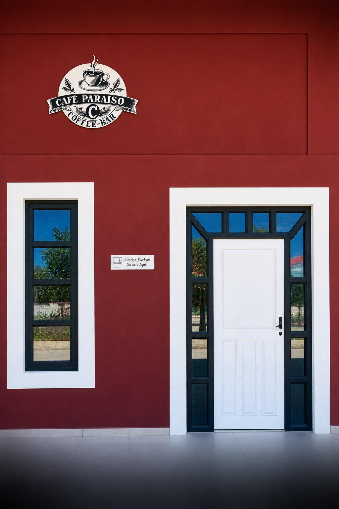
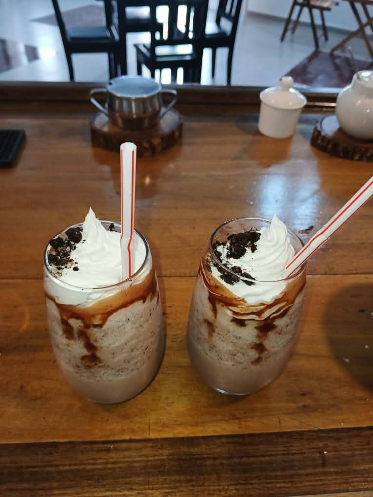

Café con carácter
Una pausa con aroma, calidez y personalidad.
Banes, Holguín · Cuba
Descubre un espacio donde el aroma del café, la calidez y los buenos momentos se encuentran.


Sobre nosotros
En Café Paraíso creemos que los mejores recuerdos nacen de los pequeños detalles: una buena taza, una conversación agradable y un ambiente que te hace sentir en casa.
Un rincón especial en Banes para compartir, disfrutar y crear momentos inolvidables.
Descubre nuestra esencia →Nuestra esencia
Una pausa con aroma, calidez y personalidad.
Un espacio acogedor para compartir y desconectar.
Detalles sencillos que hacen que quieras regresar.
Visítanos
Café Paraíso Coffee-Bar, Banes, Holguín, Cuba.
La ubicación del mapa es aproximada. Puedes sustituirla por la dirección exacta del café.
Abrir Google Maps ↗